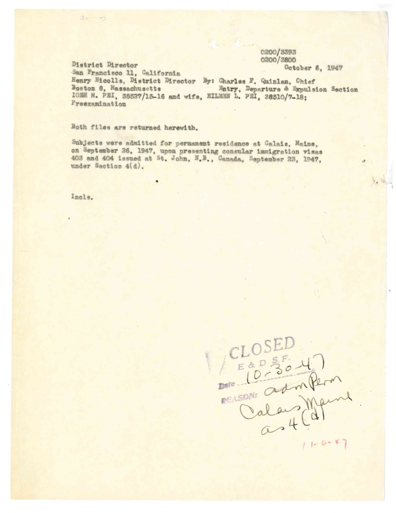
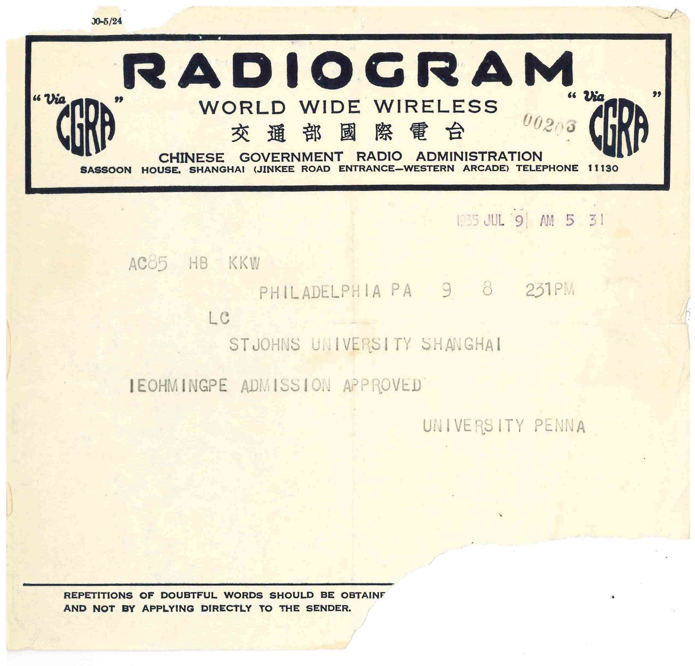
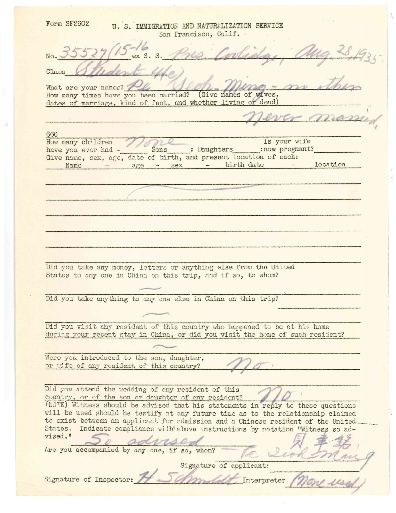
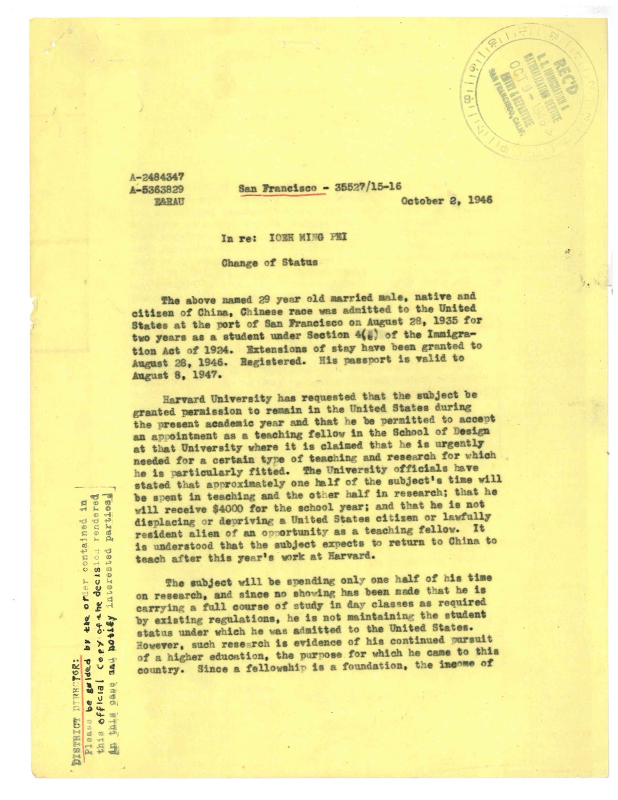
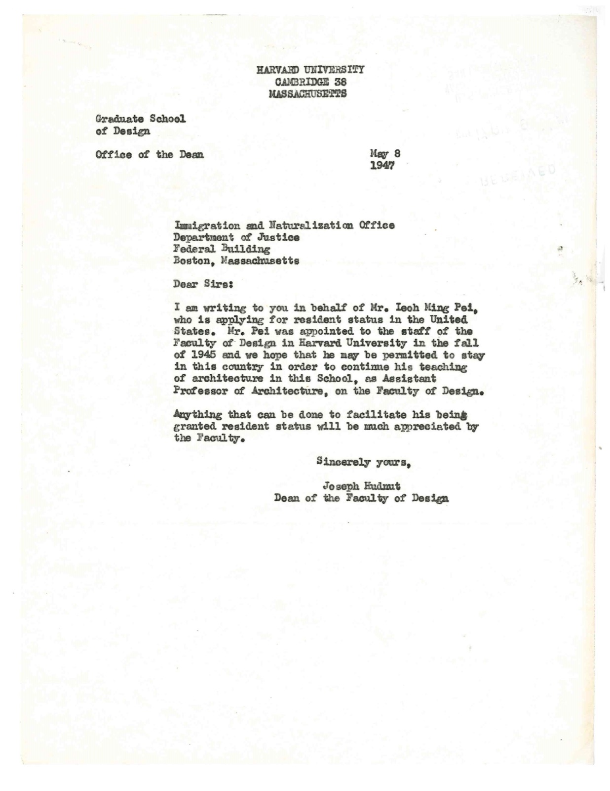
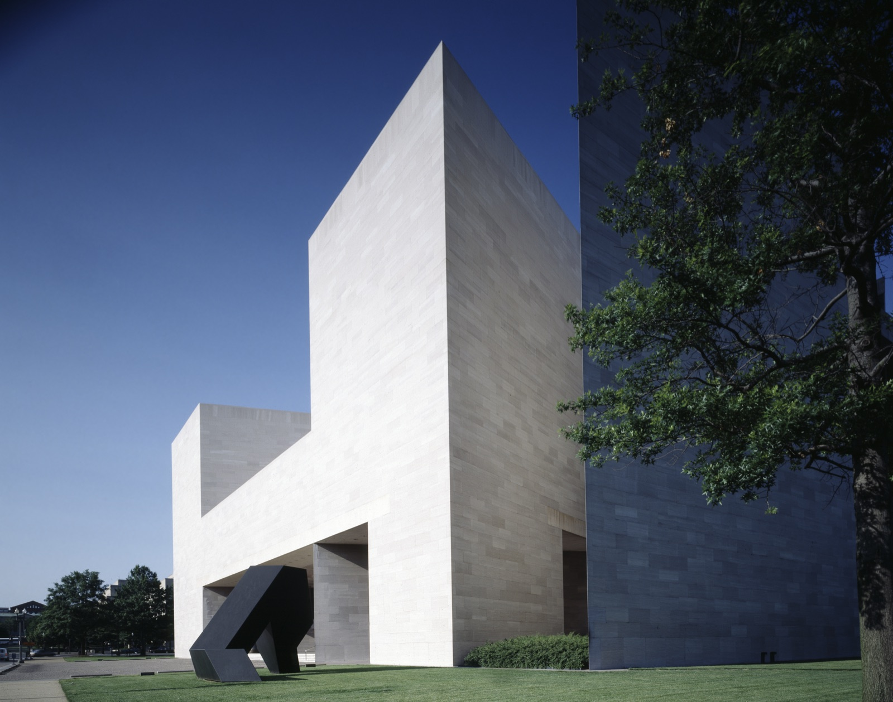

In July 1935 an American vice consul in Shanghai pinned a small photograph to a form, and an eighteen-year-old student signed his name across it: Ieoh-ming Pe.

I. M. Pei
I. M. Pei came to America on a two-year student visa. For twelve years the government expected him to go home. He stayed, became one of the most celebrated architects in the world, and put a glass pyramid in front of the Louvre. His immigration file, all 139 pages of it, survives at the National Archives.
The document behind this story

Memo: Ieoh M. Pei and wife Eileen L. Pei admitted for permanent residence at Calais, Maine, 26 September 1947 — U.S. Immigration and Naturalization Service and correspondents, 1947-10-06.
The last page in Pei's immigration file is a short memo from October 1947. It records the moment a student who had been told for twelve years that his stay was temporary became a permanent resident of the United States.
Subjects were admitted for permanent residence at Calais, Maine, on September 26, 1947, upon presenting consular immigration visas 403 and 404 issued at St. John, N.B., Canada, September 23, 1947.
“It is understood that the subject expects to return to China to teach after this year's work at Harvard.” Immigration and Naturalization Service memo on Ieoh Ming Pei's change of status, 2 October 1946 (item 4).
The story
A banker's son in Shanghai
Ieoh Ming Pei was born in Canton, China, in 1917. His father, Tsuyee Pei, was a manager at the Bank of China. When the young Pei applied for an American visa, the consulate noted that his father was "very well fixed financially" and would pay for everything.
He had finished St. John's Middle School in Shanghai in 1934 and spent a year at St. John's University. In July 1935 a radiogram arrived from Philadelphia: "IEOHMINGPE ADMISSION APPROVED. UNIVERSITY PENNA."
Through San Francisco
He sailed on the steamship President Coolidge and arrived at San Francisco on 28 August 1935. He was admitted as a student under the Immigration Act of 1924, which allowed in Chinese students at a time when almost all other Chinese immigration to the United States was banned.
An inspector asked him questions written for that era: had he ever married, did he have children, had he met the family of any Chinese resident of the United States? He answered no to all of them, and signed in both Chinese and English. Because the consulate in Shanghai had spelled his name "Pe," that is the name on his early American papers.
Changing course
Pei started at the University of Pennsylvania but soon moved to the Massachusetts Institute of Technology. Every year or two he had to apply again for permission to stay. Then, in 1937, war broke out between China and Japan, followed by the Second World War. Going home became more and more difficult.
By 1946 he was married to Eileen Loo and teaching at Harvard. Harvard asked for him to stay one more year as a teaching fellow. The immigration officers agreed, but noted that "it is understood that the subject expects to return to China to teach after this year's work at Harvard."
Out of the country, and back in
In May 1947 Harvard's Dean of Design, Joseph Hudnut, wrote to immigration officials. "We hope that he may be permitted to stay in this country in order to continue his teaching of architecture in this School, as Assistant Professor of Architecture."
The rules required something strange. To change from a visiting student to a permanent resident, Pei and his wife had to leave the United States and apply from outside. They went to Canada, received immigrant visas at Saint John, New Brunswick, on 23 September 1947, and crossed back into the United States at Calais, Maine, three days later. Twelve years after he arrived, he was finally allowed to stay. He became a U.S. citizen in 1954.
The architect
Pei designed buildings across the United States and the world, including the East Building of the National Gallery of Art in Washington, which opened in 1978. In 1983 he won the Pritzker Architecture Prize, architecture's highest honor. The jury said he had "given this century some of its most beautiful interior spaces and exterior forms."
His most famous design is the glass pyramid that forms the main entrance of the Louvre in Paris. He died in New York on 16 May 2019, at the age of 102.
The sources
Every fact on this page comes from one of these 13 items. Each links to the institution that holds it and gives that institution’s own rights wording.
-
Precis of Investigation, American Consulate-General, Shanghai, 20 July 1935
The anchor: the first page of his American story, with his teenage photograph and signature.
Rights, in the institution’s words: Access Restriction(s): Unrestricted. Use Restriction(s): Unrestricted.
-

Radiogram, University of Pennsylvania to St. John's University, Shanghai: 'Ieohmingpe admission approved', July 1935
The telegram that let him apply for a visa — and the misspelling 'Pe' that followed him for years.
Rights, in the institution’s words: Access Restriction(s): Unrestricted. Use Restriction(s): Unrestricted.
-

Arrival statement, Immigration and Naturalization Service, San Francisco, 28 August 1935 (Form SF2602)
Questions written for the Chinese Exclusion era, asked of an eighteen-year-old student.
Rights, in the institution’s words: Access Restriction(s): Unrestricted. Use Restriction(s): Unrestricted.
-

'In re: Ieoh Ming Pei — Change of Status', Immigration and Naturalization Service, 2 October 1946 (page 1)
Eleven years after arriving, the government still expected him to go home.
Rights, in the institution’s words: Access Restriction(s): Unrestricted. Use Restriction(s): Unrestricted.
-

Letter from Joseph Hudnut, Dean of the Faculty of Design, Harvard University, to the Immigration and Naturalization Office, Boston, 8 May 1947
Harvard asks the government to let him stay.
Rights, in the institution’s words: Access Restriction(s): Unrestricted. Use Restriction(s): Unrestricted.
-
Memo: Ieoh M. Pei and wife Eileen L. Pei admitted for permanent residence at Calais, Maine, 26 September 1947
The last page of the file: to become a permanent resident, he had to leave the country and come back in.
Rights, in the institution’s words: Access Restriction(s): Unrestricted. Use Restriction(s): Unrestricted.
-
letter
Letter to Mrs. Eileen Loo Pei authorising pre-examination for entry into Canada, 21 August 1947
How the Canada route worked.
Rights, in the institution’s words: Access Restriction(s): Unrestricted. Use Restriction(s): Unrestricted.
-

East Wing [East Building], National Gallery of Art, Washington, D.C.
The building that made him famous in the country that had once expected him to leave.
Rights, in the institution’s words: No known restrictions on publication. (Highsmith donated her archive to the public; transcribed via Wikimedia Commons because loc.gov blocks automated access.)
-
article
I. M. Pei's Angel Island Beginnings
The article that pointed us to the case file. Gives his naturalization in 1954 at a ceremony at the Polo Grounds, New York.
Rights, in the institution’s words: (not checked; cited only)
-
reference entry
I. M. Pei, 1983 Laureate
Architecture's highest honor; the jury citation; the East Building (1978) and the Louvre pyramid.
Rights, in the institution’s words: (not checked; cited only)
-
finding aid
I. M. Pei Papers, 1920-2016 (MSS83787)
His drawings, correspondence and photographs, for anyone who wants to go further.
Rights, in the institution’s words: (not read — loc.gov blocks automated access)
-
news report
I.M. Pei, Architect Who Designed Louvre's Pyramid, Dies at 102
His death in New York on 16 May 2019, aged 102.
Rights, in the institution’s words: All rights reserved.
-
encyclopedia entry
I.M. Pei
Born 26 April 1917, Guangzhou; died 16 May 2019, New York; U.S. citizen 1954 — independent of the AIISF article.
Rights, in the institution’s words: (not checked; cited only)
Questions to talk about
- The consulate spelled his name "Pe," and the misspelling followed him into American records. How do mistakes like this happen, and why do they matter to historians and families today?
- Pei was allowed in as a student at a time when most Chinese people were not allowed in at all. Who decided which Chinese people could come, and why?
- In 1946 the government still expected him to go back to China. What changed his plans, and what might have happened if he had gone?
- To become a permanent resident, Pei had to leave the country and come back in through Canada. Why would a rule work this way?
- Look at his teenage photograph on the 1935 form. What do you think he expected America to be like?
Things to try
- Read a file backwards. Pei's file is stored with the newest papers first and the oldest last. Using the six documents on this page, put together a timeline of his immigration from 1935 to 1947. At each step, write down who made the decision and what they needed to see.
- Design an entrance. Pei's pyramid turned the entrance of the Louvre into a landmark. Choose a building in your town that people enter every day — a school, a library, a station. Sketch a new entrance that would tell visitors something about who uses the building and where they come from.
Interviews and media from other institutions
First-person recordings and expert perspectives held by other museums, archives and media organisations. Each one links to the institution that holds it. A recording is embedded here only when its holder has given permission.
-
Oral history
I.M. Pei, Oral History Interview JFK #1 (JFKOH-IMP-01), interviewer Vicki Daitch
Vicki Daitch (interviewer) · John F. Kennedy Presidential Library and Museum (National Archives) · 2003-03-18
Pei interviewed for the John F. Kennedy Library's oral history program. Transcript online at the holder's site.
Link only: the recording stays with John F. Kennedy Presidential Library and Museum (National Archives). View at John F. Kennedy Presidential Library and Museum (National Archives)